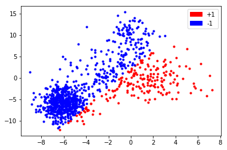
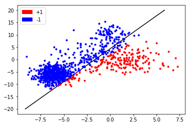

SMO Simple
The "Simple" means randomly choose lagrange complixier and
import numpy as np
import pylab
import matplotlib.patches as mpatches
import random
pylab.ion()
Synthesised data -- decision boundary:
xa = np.random.randn(100, 2)
xb = np.random.randn(600, 2)
xc = np.random.randn(300, 2)
xa[:, 1] = xa[:, 1] * 3 + 9
xb[:, 0] = xb[:, 0] * 1 - 6
xb[:, 1] = xb[:, 1] * 2 - 6
xc = xc * 3
x = np.vstack([xa,xb,xc])
y = np.array(list(map(lambda x: 1 if x.dot(np.array([9, -4])) + 9 > 0 else -1, x)))
NUM_CLASSIFY = 2
NUM_DATA = 1000
C = 0
i, j = 0, 1
for i, j in zip(x, y):
pylab.plot(i[0], i[1], '.', color='r' if j > 0 else 'b')
patch1 = mpatches.Patch(color='r', label='+1')
patch2 = mpatches.Patch(color='b', label='-1')
pylab.legend(handles=[patch1, patch2])
<matplotlib.legend.Legend at 0x7f995bc58320>

SMO
Optimize
where
Clip
, ,
, ,
is optimized refering to Machine Learning (Zhou Zhihua, (6.18) P125), Where is subscript of support vector, and we choose the final and .
or
# INIT params
a = np.abs(np.random.randn(NUM_DATA))/100
b = np.random.randn()
i, j = 0, 1
def w(a, x, y):
return np.sum(x.T * a * y, axis=1)
wij = w(a, x, y)
def f(w, xi, b):
return w.dot(xi.T) + b
fi = f(wij, x[i], b)
def E(w, xi, b, yi):
return f(w, xi, b) - yi
Ei, Ej = E(wij, x[i], b, y[i]), E(wij, x[j], b, y[j])
def eta(xi, xj):
return 2 * xi.dot(xj) - xi.dot(xi) - xj.dot(xj)
etaij = eta(x[i], x[j])
def aj(aj0, eta, Ei, Ej, yj):
return aj0 - yj * (Ei - Ej)/eta
ajj = aj(a[j], etaij, Ei, Ej, y[j])
def clipj(ajj, ai, aj, yi, yj, C=0):
if yi != yj:
L = max(0, aj - ai)
H = min(C, C + aj - ai)
else:
L = max(0, ai + aj - C)
H = min(C, ai + aj)
return np.clip(ajj, L, H)
ajj = clipj(ajj, a[i], a[j], y[i], y[j], C)
def ai(ai0, yi, yj, aj0, aj):
return ai0 + yi*yj*(aj0-aj)
aii = ai(a[i], y[i], y[j], a[j], ajj)
def b12(b, Ei, Ej, xi, xj, yi, yj, aii, ajj, ai0, aj0, C=0):
b1 = b - Ei - yi * (aii - ai0) * (xi.dot(xi)) - yi*(ajj-aj0)*(xi.dot(xj))
b2 = b - Ej - yi * (aii - ai0) * (xi.dot(xj)) - yj*(ajj-aj0)*(xj.dot(xj))
c1 = 0 < aii < C
c2 = 0 < ajj < C
if c1 and not c2:
return b1
elif c2 and not c1:
return b2
else:
return (b1 + b2) / 2
b = b12(b, Ei, Ej, x[i], x[j], y[i], y[j], aii, ajj, a[i], a[j], C)
a[i] = aii
a[j] = ajj
def update(i, j, a, b, x, y):
wij = w(a, x, y)
Ei, Ej = E(wij, x[i], b, y[i]), E(wij, x[j], b, y[j])
etaij = eta(x[i], x[j])
ajj = aj(a[j], etaij, Ei, Ej, y[j])
ajj = clipj(ajj, a[i], a[j], y[i], y[j], C)
aii = ai(a[i], y[i], y[j], a[j], ajj)
b = b12(b, Ei, Ej, x[i], x[j], y[i], y[j], aii, ajj, a[i], a[j], C)
a[i] = aii
a[j] = ajj
return a, b
def predict(a, b, x, y):
return np.array(list(map(lambda x: 1 if x >0 else -1, f(w(a, x, y), x, b))))
def train(n_iter, a, b, x, y):
population = range(NUM_DATA)
for _ in range(n_iter):
i, j = random.sample(population, 2)
a, b = update(i, j, a, b, x, y)
#print(np.sum(np.equal(predict(a, b, x, y), y)) / NUM_DATA, w(a, x, y), b)
return a, b
# INIT params
C=1
a = np.abs(np.random.randn(NUM_DATA))/100
b = 0#np.random.randn()
a, b = train(1000, a, b, x, y)
print(np.sum(np.equal(predict(a, b, x, y), y)) / NUM_DATA)
predict(a, b, x, y)
w1, w2 = w(a, x, y)
threshold = 20
x0 = (-b - w2 * (-threshold))/w1
x1 = (-b - w2 * threshold)/w1
y0 = (-b - w1 * -threshold)/w2
y1 = (-b - w1 * threshold)/w2
if x0 < -threshold:
xx1 = -threshold
yy1 = y0
else:
xx1 = x0
yy1 = -threshold
if x1 > threshold:
xx2 = threshold
yy2 = y1
else:
xx2 = x1
yy2 = threshold
pylab.plot([xx1, xx2], [yy1, yy2], 'k', label='decision boundary')
for i, j in zip(x, y):
pylab.plot(i[0], i[1], '.', color='r' if j > 0 else 'b')
patch1 = mpatches.Patch(color='r', label='+1')
patch2 = mpatches.Patch(color='b', label='-1')
pylab.legend(handles=[patch1, patch2])
0.964
<matplotlib.legend.Legend at 0x7f998444c198>

print(w(a, x, y))
print(b)
[ 19.2305594 -7.21861262]
31.6032171919